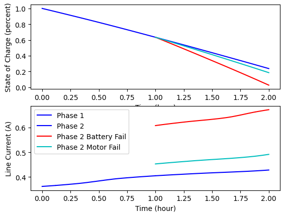

Multibranch Trajectory#
This example demonstrates the use of a Trajectory to encapsulate a series of branching phases.
Overview#
For this example, we build a system that contains two components: the first component represents a battery pack that contains multiple cells in parallel, and the second component represents a bank of DC electric motors (also in parallel) driving a gearbox to achieve a desired power output. The battery cells have a state of charge that decays as current is drawn from the battery. The open circuit voltage of the battery is a function of the state of charge. At any point in time, the coupling between the battery and the motor component is solved with a Newton solver in the containing group for a line current that satisfies the equations.
Both the battery and the motor models allow the number of cells and the number of motors to be modified by setting the n_parallel option in their respective options dictionaries. For this model, we start with 3 cells and 3 motors. We will simulate failure of a cell or battery by setting n_parallel to 2.
Branching phases are a set of linked phases in a trajectory where the input ends of multiple phases are connected to the output of a single phase. This way you can simulate alternative trajectory paths in the same model. For this example, we will start with a single phase (phase0) that simulates the model for one hour. Three follow-on phases will be linked to the output of the first phase: phase1 will run as normal, phase1_bfail will fail one of the battery cells, and phase1_mfail will fail a motor. All three of these phases start where phase0 leaves off, so they share the same initial time and state of charge.
Battery and Motor models#
The models are loosely based on the work done in Chin [CSM+19].
"""
Simple dynamic model of a LI battery.
"""
import numpy as np
from scipy.interpolate import Akima1DInterpolator
import openmdao.api as om
# Data for open circuit voltage model.
train_SOC = np.array([0., 0.1, 0.25, 0.5, 0.75, 0.9, 1.0])
train_V_oc = np.array([3.5, 3.55, 3.65, 3.75, 3.9, 4.1, 4.2])
class Battery(om.ExplicitComponent):
"""
Model of a Lithium Ion battery.
"""
def initialize(self):
self.options.declare('num_nodes', default=1)
self.options.declare('n_series', default=1, desc='number of cells in series')
self.options.declare('n_parallel', default=3, desc='number of cells in parallel')
self.options.declare('Q_max', default=1.05,
desc='Max Energy Capacity of a battery cell in A*h')
self.options.declare('R_0', default=.025,
desc='Internal resistance of the battery (ohms)')
def setup(self):
num_nodes = self.options['num_nodes']
# Inputs
self.add_input('I_Li', val=np.ones(num_nodes), units='A',
desc='Current demanded per cell')
# State Variables
self.add_input('SOC', val=np.ones(num_nodes), units=None, desc='State of charge')
# Outputs
self.add_output('V_L',
val=np.ones(num_nodes),
units='V',
desc='Terminal voltage of the battery')
self.add_output('dXdt:SOC',
val=np.ones(num_nodes),
units='1/s',
desc='Time derivative of state of charge')
self.add_output('V_oc', val=np.ones(num_nodes), units='V',
desc='Open Circuit Voltage')
self.add_output('I_pack', val=0.1*np.ones(num_nodes), units='A',
desc='Total Pack Current')
self.add_output('V_pack', val=9.0*np.ones(num_nodes), units='V',
desc='Total Pack Voltage')
self.add_output('P_pack', val=1.0*np.ones(num_nodes), units='W',
desc='Total Pack Power')
# Derivatives
row_col = np.arange(num_nodes)
self.declare_partials(of='V_oc', wrt=['SOC'], rows=row_col, cols=row_col)
self.declare_partials(of='V_L', wrt=['SOC'], rows=row_col, cols=row_col)
self.declare_partials(of='V_L', wrt=['I_Li'], rows=row_col, cols=row_col)
self.declare_partials(of='dXdt:SOC', wrt=['I_Li'], rows=row_col, cols=row_col)
self.declare_partials(of='I_pack', wrt=['I_Li'], rows=row_col, cols=row_col)
self.declare_partials(of='V_pack', wrt=['SOC', 'I_Li'], rows=row_col, cols=row_col)
self.declare_partials(of='P_pack', wrt=['SOC', 'I_Li'], rows=row_col, cols=row_col)
self.voltage_model = Akima1DInterpolator(train_SOC, train_V_oc)
self.voltage_model_derivative = self.voltage_model.derivative()
def compute(self, inputs, outputs):
opt = self.options
I_Li = inputs['I_Li']
SOC = inputs['SOC']
V_oc = self.voltage_model(SOC, extrapolate=True)
outputs['V_oc'] = V_oc
outputs['V_L'] = V_oc - (I_Li * opt['R_0'])
outputs['dXdt:SOC'] = -I_Li / (3600.0 * opt['Q_max'])
outputs['I_pack'] = I_Li * opt['n_parallel']
outputs['V_pack'] = outputs['V_L'] * opt['n_series']
outputs['P_pack'] = outputs['I_pack'] * outputs['V_pack']
def compute_partials(self, inputs, partials):
opt = self.options
I_Li = inputs['I_Li']
SOC = inputs['SOC']
dV_dSOC = self.voltage_model_derivative(SOC, extrapolate=True)
partials['V_oc', 'SOC'] = dV_dSOC
partials['V_L', 'SOC'] = dV_dSOC
partials['V_L', 'I_Li'] = -opt['R_0']
partials['dXdt:SOC', 'I_Li'] = -1./(3600.0*opt['Q_max'])
n_parallel = opt['n_parallel']
n_series = opt['n_series']
V_oc = self.voltage_model(SOC, extrapolate=True)
V_L = V_oc - (I_Li * opt['R_0'])
partials['I_pack', 'I_Li'] = n_parallel
partials['V_pack', 'I_Li'] = -opt['R_0']
partials['V_pack', 'SOC'] = n_series * dV_dSOC
partials['P_pack', 'I_Li'] = n_parallel * n_series * (V_L - I_Li * opt['R_0'])
partials['P_pack', 'SOC'] = n_parallel * I_Li * n_series * dV_dSOC
# num_nodes = 1
# prob = om.Problem(model=Battery(num_nodes=num_nodes))
# model = prob.model
# prob.setup()
# prob.set_solver_print(level=2)
# prob.run_model()
# derivs = prob.check_partials(compact_print=True)
"""
Simple model for a set of motors in parallel where efficiency is a function of current.
"""
import numpy as np
import openmdao.api as om
class Motors(om.ExplicitComponent):
"""
Model for motors in parallel.
"""
def initialize(self):
self.options.declare('num_nodes', default=1)
self.options.declare('n_parallel', default=3, desc='number of motors in parallel')
def setup(self):
num_nodes = self.options['num_nodes']
# Inputs
self.add_input('power_out_gearbox', val=3.6*np.ones(num_nodes), units='W',
desc='Power at gearbox output')
self.add_input('current_in_motor', val=np.ones(num_nodes), units='A',
desc='Total current demanded')
# Outputs
self.add_output('power_in_motor', val=np.ones(num_nodes), units='W',
desc='Power required at motor input')
# Derivatives
row_col = np.arange(num_nodes)
self.declare_partials(of='power_in_motor', wrt=['*'], rows=row_col, cols=row_col)
def compute(self, inputs, outputs):
current = inputs['current_in_motor']
power_out = inputs['power_out_gearbox']
n_parallel = self.options['n_parallel']
# Simple linear curve fit for efficiency.
eff = 0.9 - 0.3 * current / n_parallel
outputs['power_in_motor'] = power_out / eff
def compute_partials(self, inputs, partials):
current = inputs['current_in_motor']
power_out = inputs['power_out_gearbox']
n_parallel = self.options['n_parallel']
eff = 0.9 - 0.3 * current / n_parallel
partials['power_in_motor', 'power_out_gearbox'] = 1.0 / eff
partials['power_in_motor', 'current_in_motor'] = 0.3 * power_out / (n_parallel * eff**2)
# num_nodes = 1
# prob = om.Problem(model=Motors(num_nodes=num_nodes))
# model = prob.model
# prob.setup()
# prob.run_model()
# derivs = prob.check_partials(compact_print=True)
"""
ODE for example that shows how to use multiple phases in Dymos to model failure of a battery cell
in a simple electrical system.
"""
import numpy as np
import openmdao.api as om
class BatteryODE(om.Group):
def initialize(self):
self.options.declare('num_nodes', default=1)
self.options.declare('num_battery', default=3)
self.options.declare('num_motor', default=3)
def setup(self):
num_nodes = self.options['num_nodes']
num_battery = self.options['num_battery']
num_motor = self.options['num_motor']
self.add_subsystem(name='pwr_balance',
subsys=om.BalanceComp(name='I_Li', val=1.0*np.ones(num_nodes),
rhs_name='pwr_out_batt',
lhs_name='P_pack',
units='A', eq_units='W', lower=0.0, upper=50.))
self.add_subsystem('battery', Battery(num_nodes=num_nodes, n_parallel=num_battery),
promotes_inputs=['SOC'],
promotes_outputs=['dXdt:SOC'])
self.add_subsystem('motors', Motors(num_nodes=num_nodes, n_parallel=num_motor))
self.connect('battery.P_pack', 'pwr_balance.P_pack')
self.connect('motors.power_in_motor', 'pwr_balance.pwr_out_batt')
self.connect('pwr_balance.I_Li', 'battery.I_Li')
self.connect('battery.I_pack', 'motors.current_in_motor')
self.nonlinear_solver = om.NewtonSolver(solve_subsystems=False, maxiter=20)
self.linear_solver = om.DirectSolver()
Building and running the problem#
import matplotlib.pyplot as plt
import openmdao.api as om
import dymos as dm
from dymos.examples.battery_multibranch.battery_multibranch_ode import BatteryODE
from dymos.utils.lgl import lgl
prob = om.Problem()
opt = prob.driver = om.ScipyOptimizeDriver()
opt.declare_coloring()
opt.options['optimizer'] = 'SLSQP'
num_seg = 5
seg_ends, _ = lgl(num_seg + 1)
traj = prob.model.add_subsystem('traj', dm.Trajectory())
# First phase: normal operation.
transcription = dm.Radau(num_segments=num_seg, order=5, segment_ends=seg_ends, compressed=False)
phase0 = dm.Phase(ode_class=BatteryODE, transcription=transcription)
traj_p0 = traj.add_phase('phase0', phase0)
traj_p0.set_time_options(fix_initial=True, fix_duration=True)
traj_p0.add_state('state_of_charge', fix_initial=True, fix_final=False,
targets=['SOC'], rate_source='dXdt:SOC')
# Second phase: normal operation.
phase1 = dm.Phase(ode_class=BatteryODE, transcription=transcription)
traj_p1 = traj.add_phase('phase1', phase1)
traj_p1.set_time_options(fix_initial=False, fix_duration=True)
traj_p1.add_state('state_of_charge', fix_initial=False, fix_final=False,
targets=['SOC'], rate_source='dXdt:SOC')
traj_p1.add_objective('time', loc='final')
# Second phase, but with battery failure.
phase1_bfail = dm.Phase(ode_class=BatteryODE, ode_init_kwargs={'num_battery': 2},
transcription=transcription)
traj_p1_bfail = traj.add_phase('phase1_bfail', phase1_bfail)
traj_p1_bfail.set_time_options(fix_initial=False, fix_duration=True)
traj_p1_bfail.add_state('state_of_charge', fix_initial=False, fix_final=False,
targets=['SOC'], rate_source='dXdt:SOC')
# Second phase, but with motor failure.
phase1_mfail = dm.Phase(ode_class=BatteryODE, ode_init_kwargs={'num_motor': 2},
transcription=transcription)
traj_p1_mfail = traj.add_phase('phase1_mfail', phase1_mfail)
traj_p1_mfail.set_time_options(fix_initial=False, fix_duration=True)
traj_p1_mfail.add_state('state_of_charge', fix_initial=False, fix_final=False,
targets=['SOC'], rate_source='dXdt:SOC')
traj.link_phases(phases=['phase0', 'phase1'], vars=['state_of_charge', 'time'])
traj.link_phases(phases=['phase0', 'phase1_bfail'], vars=['state_of_charge', 'time'])
traj.link_phases(phases=['phase0', 'phase1_mfail'], vars=['state_of_charge', 'time'])
prob.model.options['assembled_jac_type'] = 'csc'
prob.model.linear_solver = om.DirectSolver(assemble_jac=True)
prob.setup()
phase0.set_time_val(initial=0.0, duration=3600)
phase1.set_time_val(initial=3600.0, duration=3600.0)
phase1_bfail.set_time_val(initial=3600.0, duration=3600.0)
phase1_mfail.set_time_val(initial=3600.0, duration=3600.0)
prob.set_solver_print(level=0)
dm.run_problem(prob)
soc0 = prob['traj.phase0.states:state_of_charge']
soc1 = prob['traj.phase1.states:state_of_charge']
soc1b = prob['traj.phase1_bfail.states:state_of_charge']
soc1m = prob['traj.phase1_mfail.states:state_of_charge']
# Plot Results
t0 = prob['traj.phases.phase0.timeseries.time']/3600
t1 = prob['traj.phases.phase1.timeseries.time']/3600
t1b = prob['traj.phases.phase1_bfail.timeseries.time']/3600
t1m = prob['traj.phases.phase1_mfail.timeseries.time']/3600
plt.subplot(2, 1, 1)
plt.plot(t0, soc0, 'b')
plt.plot(t1, soc1, 'b')
plt.plot(t1b, soc1b, 'r')
plt.plot(t1m, soc1m, 'c')
plt.xlabel('Time (hour)')
plt.ylabel('State of Charge (percent)')
I_Li0 = prob['traj.phases.phase0.rhs_all.pwr_balance.I_Li']
I_Li1 = prob['traj.phases.phase1.rhs_all.pwr_balance.I_Li']
I_Li1b = prob['traj.phases.phase1_bfail.rhs_all.pwr_balance.I_Li']
I_Li1m = prob['traj.phases.phase1_mfail.rhs_all.pwr_balance.I_Li']
plt.subplot(2, 1, 2)
plt.plot(t0, I_Li0, 'b')
plt.plot(t1, I_Li1, 'b')
plt.plot(t1b, I_Li1b, 'r')
plt.plot(t1m, I_Li1m, 'c')
plt.xlabel('Time (hour)')
plt.ylabel('Line Current (A)')
plt.legend(['Phase 1', 'Phase 2', 'Phase 2 Battery Fail', 'Phase 2 Motor Fail'], loc=2)
plt.show()
--- Constraint Report [traj] ---
--- phase0 ---
None
--- phase1 ---
None
--- phase1_bfail ---
None
--- phase1_mfail ---
None
'rhs_checking' is disabled for 'DirectSolver in <model> <class Group>' but that solver has redundant adjoint solves. If it is expensive to compute derivatives for this solver, turning on 'rhs_checking' may improve performance.
Model viewer data has already been recorded for Driver.
Full total jacobian for problem 'problem' was computed 3 times, taking 0.0564990199999329 seconds.
Total jacobian shape: (107, 122)
Jacobian shape: (107, 122) (4.63% nonzero)
FWD solves: 6 REV solves: 0
Total colors vs. total size: 6 vs 122 (95.08% improvement)
Sparsity computed using tolerance: 1e-25
Time to compute sparsity: 0.0565 sec
Time to compute coloring: 0.0395 sec
Memory to compute coloring: 0.2500 MB
Coloring created on: 2024-08-06 12:52:41
Optimization terminated successfully (Exit mode 0)
Current function value: 7200.0
Iterations: 3
Function evaluations: 4
Gradient evaluations: 3
Optimization Complete
-----------------------------------
/usr/share/miniconda/envs/test/lib/python3.11/site-packages/openmdao/visualization/opt_report/opt_report.py:625: UserWarning: Attempting to set identical low and high ylims makes transformation singular; automatically expanding.
ax.set_ylim([ymin_plot, ymax_plot])

References#
Jeff Chin, Sydney L Schnulo, Thomas Miller, Kevin Prokopius, and Justin S Gray. Battery performance modeling on sceptor x-57 subject to thermal and transient considerations. In AIAA Scitech 2019 Forum, 0784. 2019.